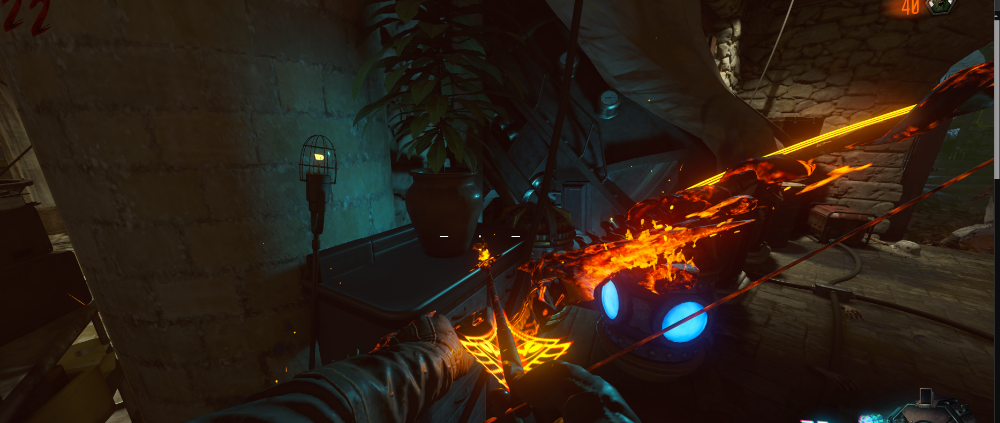

Chicle gratis (Der Eisendrachen)
Tendremos que recoger la planta en la sala del teleporter antes de viajar en el tiempo
En el pasado la volveremos a colocar en el mismo sitio.
Al volver la planta habrá crecido y, al interactuar con ella, obtendremos el chicle.
